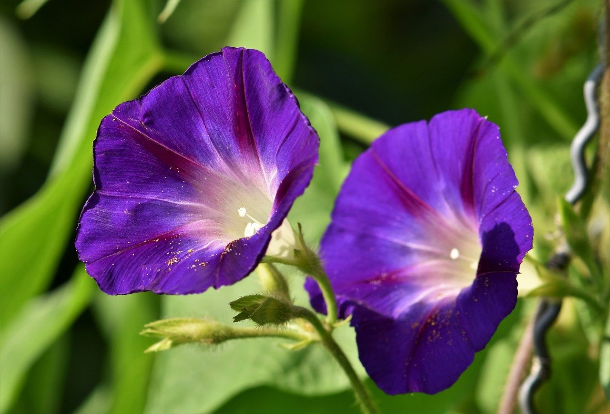

식물에 대한 페이지

나팔꽃에 대한 정의
나팔꽃(Ipomoea tricolor)의 외형은 심장 모양의 녹색 잎으로 덮인 빠르게 자라는 꼬인 줄기에 아름답고 이국적인 모양의 다채로운 꽃을 피우는 모습입니다.
'나팔꽃'이라는 이름은 식물의 이러한 외형적 특징에서 따온 것입니다. 접시 모양의 꽃이 일찍 열리며 더운 날씨에는 오후 중반에 시든다고 합니다.
많은 꽃이 연달아 맺기 때문에 이 식물은 여름부터 초가을까지 꽃을 피우며 몇 달 동안 사랑스러운 모습을 볼 수 있습니다.
꽃은 지름이 최대 8cm이고 다양한 품종과 색상이 있으며 가장 잘 알려진 것은 '하늘색'으로 하늘색, 흰색 목의 꽃, 보라색, 빨간색, 옅은 파란색 및 바이올렉색입니다.
색색의 꽃도 있습니다. 나팔꽃은 높이가 몇 미터까지 자랄 수 있으며 지지대의 높이가 약 1.5~2m로 제한될 수 있습니다.
나팔꽃 관련 정보 링크 소개
나팔꽃에 대한 자세한 정보는 이
링크를 참조하십시오.